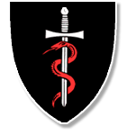

About Avoca Hockey Club
About us
Avoca Hockey Club is a fun and competitve club affiliated with Leinster Hockey and the Irish Hockey Association. Our aim is to provide a fun, inclusive, competitive, safe and social environment in which players of all levels of hockey can develop their skills whilst also enjoying the great game of hockey!
Our 3 mens squads currently compete in Leinster Hockeys divisions 1, 4 and 6 whilst our 5 ladies squads compete in divisions 1, 5, 7, 10 and 11. On top of competing in the the Leinster leagues our Senior squads also compete annualy in various Irish Outdoor and Indoor Cups.
Avoca Hockey Club are committed to the development of hockey. We have set goals to have our Mens and Ladies 1st teams competing in The Irish Hockey League by 2020 and growing playing membership to 800. We are always looking for and welcoming new members as well as some old faces to the club. If you are interested in joining or have any questions about Avoca Hockey Club please visit our contacts page or email info@avocahockeyclub.com
Our Club History
1891 - 1950
Founded in 1891, hockey became the School's principal game from 1895. With Old Boys continuing to play for the School, a "Past and Present" Hockey Club was formed. They won the Irish Junior Cup in 1897, and soon became strong enough to play in Senior League and Cup Competitions. The present Club was re-formed in 1929 and has entered teams for Senior and other League and Cup Competitions ever since. The Club has played at the site of the present School since 1936, then fielding two teams.
1950-2000
Since the opening of Newpark School in 1973, the growth of the Club has been phenomenal; both in terms of numbers and success. The Club had four men's teams in 1972, and this had grown to eight men's teams and four Ladies teams in 1976, a Ladies team having first been fielded in 1973. When Newpark School was first envisaged, the then Principal of Avoca and Kingstown School, at the request of the President of Avoca Hockey Club, wrote to the Department of Education, identifying the existence of the Hockey Club as a past pupils Club and seeking assurance of the continuing recognition of our special status. This assurance was given and confirmed in a letter received from the Department of Education. Avoca Hockey Club made a considerable contribution in terms of labour and finance, to the maintenance and marking of the two old Grit pitches at Newpark. Consideration was given to changing the name of the Club to "Newpark Hockey Club" but this was not followed up due to wide recognition of the existing name. Avoca Hockey Club has a high standing in both Leinster and Irish Hockey. Thirty-six of our players have gained full Senior International Caps (Outdoor) and seven (Indoor). The Club dominated Leinster Hockey, both outdoor and indoor right up to the mid 1990's with a particular triumph culminating in the Capture of the Irish Senior Cup in 1996.
2000 to date
After the monumental Victory in the Irish Senior Cup, which was coupled the following year by Newpark School winning the All Ireland Schoolboy Championships, the club underwent a restructuring and re-growth period. Avoca applied for the re-development of the two grit hockey pitches and successfully received a grant from the National Lottery. A new state of the art water based Astro turf pitch was completed in time for the 2006/2007 season and is still in use today. More recently the Club, in partnership with the Domincan College Sion Hill, secured a Sports Capital Grant towards a new sand dressed Astro turf which was completed in 2015. The Club also rents a Pitch at Loreto College, Foxrock. These three locations are needed to cater for a Club with a fast growing Club of 538 playing members during the 2014/15 Season. Currently the Club boasts 3 Mens Senior Teams and 5 Ladies Senior Teams, competing in a range of provincial leagues and cups as well as national trophies. Both our Mens and Ladies 1st teams now compete in Division 1 and our Junior Girls and Boys compete in A leagues at all age groups. The Club provides, therefore, not only the facilities for sports enthusiasts, but a community service in engaging the interest and tapping and directing the energy and enthusiasm of young people from an early age. The Club also knows how to enjoy itself and has a vibrant social scene, with events for members and their familes held throughout the year.